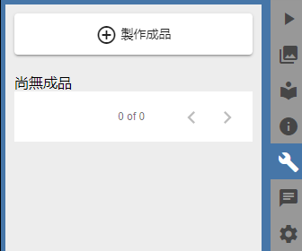
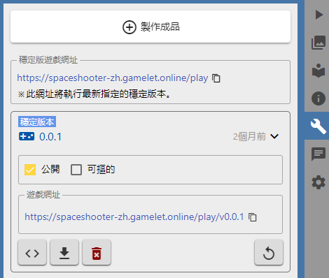

發佈遊戲成品¶
事件表完成後，遊戲的製作也告一段落，但是要讓遊戲發佈給網友們玩，我們的工作還沒結束。
在這一節，我們會實際操作CG中最基本的發佈工作，過程中也許會瞄到一些看起來更酷的功能，但請在看完這個教學後再自行研究。
製作成品¶
發佈遊戲前第一件要做的事就是 製作成品 。先前我們試玩遊戲時，是讀取專案中的原始碼來執行，其他玩家是看不到的，而成品則可以公開給所有玩家遊玩。
- 網頁右邊有一列直排的選單，按下第五個按鈕 就可以打開製作成品的面板。
參考截圖
- 按下 製作成品，這時CG就會開始製作成品，並在完成後打開上傳成品的視窗。
- 接著在成品製作完成的視窗中，選擇 應用程式/遊戲 作為成品用途。
- 在版次的地方選擇 Patch ，決定這個成品的版本號碼。
- 在確定 公開 是勾選的狀況按下 上傳成品
測試及發佈成品¶
其實在上一個步驟完成後，版次為 0.0.1 的成品就已經公開了，在製作成品的面版中也可以找到遊玩成品的網址， 例如本範例專案中的第一個成品就是 https://spaceshooter-zh.gamelet.online/play/v0.0.1 ， 但是CG可以讓你的成品看起來更酷。
- 點擊成品中的 設定為穩定版本
一個成品測試過沒什麼問題的話，就可以將其設定為穩定版本。 當一個專案有了 穩定版本 ，就可以得到一個 穩定版遊戲網址 。
有了穩定版遊戲成品後，我們就可以做一些更酷的事情。
專案網站¶
網頁右邊一列直排的選單中按下第七個按鈕 打開設定面板，在 專案 中的 網站 欄有一個 去看看 的按鈕， 可以帶你到專屬於這個專案的網站，例如本範例中的專案網站就是 https://spaceshooter-zh.gamelet.online ，網站中包含
- 遊戲區: 會放置最新設定的穩定版本遊戲
- 資訊區: 提供專案被瀏覽的統計資料、作者 以及 README.md 的內容。
- 意見區: 提供玩家給予意見回饋的地方。
回到專案的設定面版 ，打開 遊戲 欄可以看到一些關於網站中遊戲外觀的設定。
- Favicon 可以從專案的圖片資源選擇一個作為網站圖標(通常會選一個 16x16或32x32的小圖示)
- Body背景顏色 設定被遊戲壓在下面的區域的背景色
- 載入背景圖 在遊戲正在載入時背景顯示的圖片，同樣也是要從專案的圖片資源中選擇。
接下來...¶
你已完成了新手教學，已經大概瞭解CG中強大功能的基礎，接著可以去試試事件表中其他的功能， 或是看看 其他人製作遊戲的專案，也可以在 討論區 中和其他設計師互相切磋。